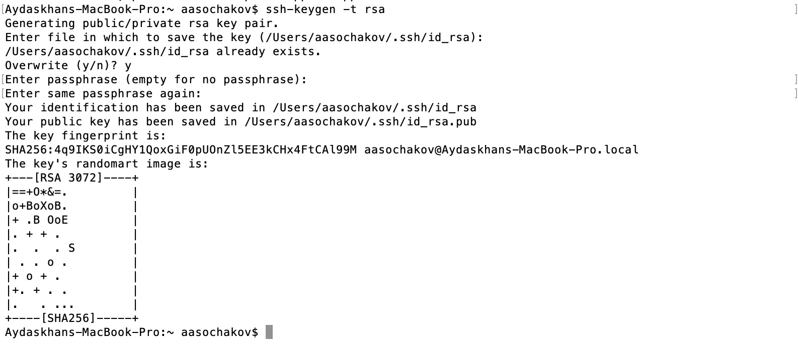
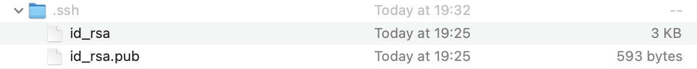
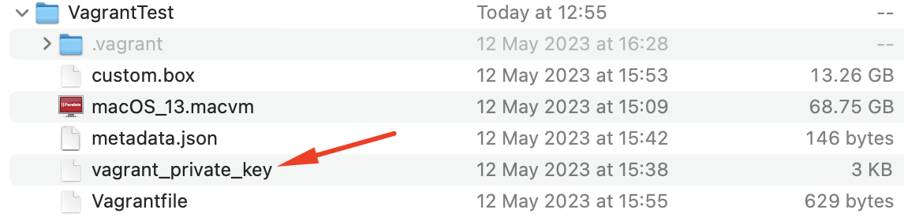
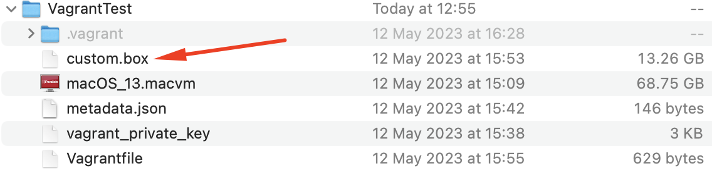
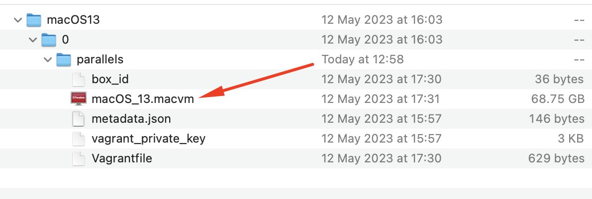
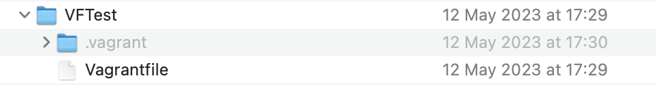
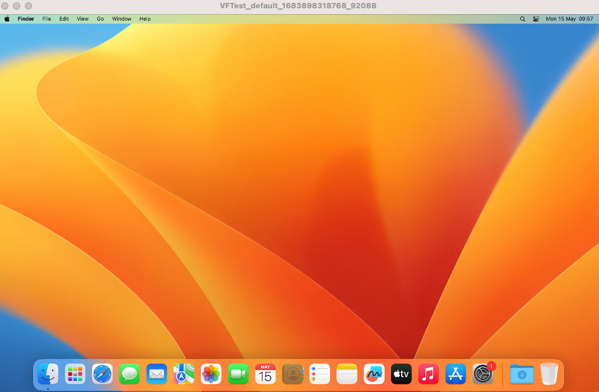

Creating a macOS Base Box Manually
Warning: Advanced Topic! Creating a base box can be a time consuming and tedious process, and is not recommended for new Vagrant users. If you're just getting started with Vagrant, we recommend trying to find existing base boxes to use first.
Prior to reading this page, please check out the basics of the Vagrant box file format.
Pre-requisites
- Download and install Vagrant.
Install Parallels plugin for Vagrant by executing the command below in Terminal:
$ vagrant plugin install vagrant-parallelsStart Parallels Desktop and create a new macOS virtual machine as outlined in KB 125561.
While creating the VM, give the username as ‘vagrant’ only.
- Enable passwordless sudo for macOS virtual machine
- Open Terminal in macOS virtual machine and run:
$ sudo visudoEdit the line:
%admin ALL=(ALL) ALLTo Say:
%admin ALL=(ALL) NOPASSWD: ALLNow, you should now be able to run sudo without password.
Install Parallels Tools inside the macOS virtual machine.
Boot macOS virtual machine and enable Remote Login (System Settings > General > Sharing > Enable Remote Login). Don't forget to give “Full disk access to users”, do allow “All users” (in the same settings, press button)

Restart macOS virtual machine for the Remote Login to take effect.
SSH Keys
We will need to create a new SSH keypair for Vagrant to use to communicate
Create an ssh public-private key from the host.
- Start Terminal on the host side.
Execute the following command:
$ ssh-keygen -t rsaAfter every step press "Enter". You don't need to use a passphrase or file. As a result, you will get a similar output as in the example below:  It will generate the files below in the ~/.ssh/ directory: 
Upload the public key to macOS virtual machine from your host by executing the command below in Terminal:
$ ssh-copy-id vagrant@<virtual machine's ipv4 address>Note: To check your virtual machine's IP address, go to Finder > System Settings > Network > Ethernet > IP address.
Create Base Box
- In Parallels directory on your Mac create a folder (something simple like
VagrantTest). Copy the initially created bundle of your macOS virtual machine (it has the .macvm extension) to the newly created folder (
VagrantTest).Optional: You can rename macOS virtual machine with a unique name so that you won't get any name collision issues.
- Run Terminal on the host side and execute the following command:
$ prlctl set "macOS 13" --name "macOS_13"Where the name 'macOS_13' is your virtual machine's name.
Note: Renaming the virtual machine is one of the solutions to avoid name collision. You can also remove macOS virtual machine from Control Center (Parallels icon > Control Center > Right-click on macOS 13 virtual machine > Remove 'macOS 13' > Keep Files).
Download Vagrantfile and put it in the VagrantTest folder.
Download metadata.json file and put it in the VagrantTest folder.
Copy your private key from ~/.ssh/ directory in VagrantTest directory and rename it to 'vagrant_private_key': 
Create a box by Terminal.
- Execute the following command:
$ cd VagrantTest $ tar cvzf custom.box ./box.macvm ./Vagrantfile ./metadata.json ./vagrant_private_keywhere:
custom.box- any box name. For example, vagrant.box, vagrant_project.box, etc.
box.macvm- macOS virtual machine's name from step 1 (for example,macOS\_13.macvm)
Vagrantfile,metadata.json,vagrant\_private_key- files from VagrantTest folder.Note: The name of the macOS 13 virtual machine should not contain any spaces.

Add the created box into vagrant boxes:
- Run Terminal and execute:
$ vagrant box add <name>.box --name macOS13where
<name>.box is the name of the box created in the previous step.Go to ~/.vagrant.d/boxes/macOS13 folder and check that extension of macOS virtual machine is
.macvm: 
Create a Vagrant folder
We now have our base box created, to create virtual machines from it we will need to create a Vagrant folder structure and a Vagrantfile.
Create a new folder in the home directory and name it VFTest (In the Finder, you can open your home folder by choosing Go > Home or by pressing Shift-Command-H).
Note: The name of the folder can be different. 'VFTest' is just for example.
Download the defautl Vagrantfile and put it in
VFTestfolder, or the folder you have created in the previous step. In Terminal you should go to the directory with Vagrantfile ('VFTest' folder from step 15). Just type:
$ cd <path to the VFTest folder>You can now start the vagrant box by typing:
$ vagrant up -provider=parallelsThis command will start macOS virtual machine (the name of the virtual machine will be different): 
Now you are ready to execute Vagrant commands.